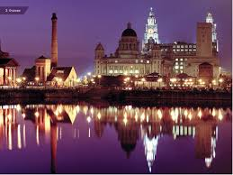

<!DOCTYPE html>
<html>
<head>
	<title>My City</title>
</head>
<body>

</body>
</html>
<h1>England</h1>
<h2>Liverpool</h2>



<p>Liverpool (/ˈlɪvərpuːl/) is a city in North West England, with an estimated population of <em>484,578</em> in 2016 within the <strong>City of Liverpool</strong> borough.With its surrounding areas, it is the fifth-largest metropolitan area in the UK, with over <em>2.24 million</em> people in 2011. The local authority is <strong>Liverpool City Council</strong>, the most populous local government district within the metropolitan county of <strong>Merseyside</strong> and the largest within the <strong>Liverpool City Region</strong>.</p>

<h3>Things to do</h3>
<ol>
	<li>Liverpool Cathedral</li>
	<li>Beatles Tour</li>
	<li>Anfield Stadium</li>


</ol>

<h3>Places to eat</h3>
<ol>
	<li>Moose and Moonshine</li>
	<li>The Leaf</li>
	<li>Mowgli</li>


</ol>

<a href="https://en.wikipedia.org/wiki/Liverpool">More info</a>